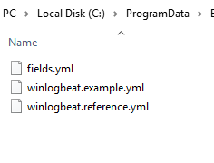

Configuring winlogbeat
Configuring winlogbeat
By default, the configuration files are located in C:\ProgramData\Elastic\Beats\winlogbeat
Note that winlogbeat.yml does not exist. This will need to be created.
Open a text editor as an administrator and save an empty file in C:\ProgramData\Elastic\Beats\winlogbeat named winlogbeat.yml
Add the following to the file:
Be sure to change password to the correct ingest token
winlogbeat.event_logs:
- name: Application
- name: Security
- name: System
- name: Microsoft-windows-sysmon/operational
- name: Microsoft-windows-PowerShell/Operational
event_id: 4103, 4104
- name: Windows PowerShell
event_id: 400,600
- name: Microsoft-Windows-WMI-Activity/Operational
event_id: 5857,5858,5859,5860,5861
- name: Microsoft-Windows-Windows Defender/Operational
output.elasticsearch:
hosts: ["https://cloud.humio.com:443/api/v1/ingest/elastic-bulk"]
password: "38e20dbe-15b1-448c-a6dc-d495f74b13c6"
compression_level: 5
bulk_max_size: 200
worker: 1
Configuration is based on HELK project
Name is name of the source where events are coming from
Event_id are the id’s that are collected (optional) ‘-’ sign in front of an ID can be used to not collect the event id